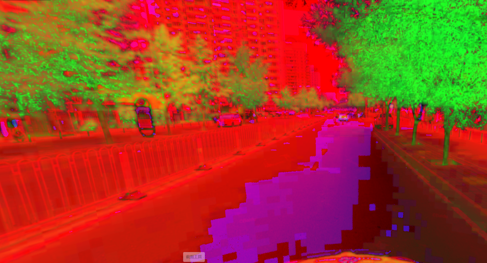

城市绿化率分析
利用OpenCV颜色识别方法，识别街道中的植被覆盖面积
目录
城市绿化有助于减少碳排放和增加氧气产量。此外，它还可以在夏天提供庇护。为了评估街道的绿化程度，本研究为 50 米路段的每一侧给出了百分比值。
方法
通过抓取地图API数据，得到街景图片。将图像处理分析后量化街边绿化率。
1抓取街景图片
抓取数据的方法主要有两种，一是使用beautifulsoup库，直接将数据下载。二是通过API端口请求下载数据，这要用到urllib库或者request库。此次数据处理需要获取地图网站提供的街景图片数据，在获取密匙以后，利用urlib2库调用端口并返回数据。
#coding=utf-8
#https://lbs.qq.com/webservice_v1/guide-adsorb.html 开发文档
import urllib2
from urllib import quote
import json
import time
baseURL = 'https://apis.map.qq.com/ws/streetview/v1/getpano?location='
# https://apis.map.qq.com/ws/streetview/v1/getpano?location=&radius=100&key=
path = 'E:\\01ArcPy\\'
poiList = []
#define fetch action 定义抓取动作
def fetch(url):
feedback = urllib2.urlopen(url)
detail = feedback.read()
response = json.loads(detail)
time.sleep(3)
return response
#read every line in coordination file 读取坐标文件行
coorfile = open('E:\\01ArcPy\\Trans_xy.txt','r')
coordinates = coorfile.readlines()
outputFile = 'E:\\01ArcPy\\poni.txt'
#fetch pictures from API
for coordinate in range(0,len(coordinates)):
field = coordinates[coordinate].split(',')
id = field[0]
lat = field[1].strip()
lng = field[2].strip()
print 'this is'+str(id)
intialURL = baseURL + lng + ',' + lat +'&radius=100&key=' + '' #密匙
print intialURL
response = fetch(intialURL)
try:
contents = response['detail']
print contents
poni = contents['id']
print poni
poiList.append([poni])#,str(lat),str(lng)])
except:
poni = 0
#save pictures
with open(outputFile,'a') as f:
for poiInfo in poiList:
f.write((';'.join(poiInfo)+'\n').encode('utf-8'))
f.close()
f = open(outputFile,'a')
f.close()2计算绿化率
在图片处理方面，需要用到OpenCV计算机视觉库，其有强大的处理图像功能。 识别图像中的绿色，要先将图像颜色RGB转化为OpenCV可计算的HSV灰度模式，通过确定绿色的颜色范围值，来统计绿植在整个街道空间的占比。
import cv2
import os
import time
image_path ='F:/01GIS/02CODE/pic/' #path 原始图片保存位置
Txt_path = 'F:/01GIS/02CODE/result.txt' #result file 成果文本保存位置
save_path_hsv = 'F:/01GIS/02CODE/hsv/'
def brg2hsv(image_path,save_path_hsv):
f = open(Txt_path, 'a')
f.write("Name,Percentage"+"\n")
f.close()
filenames = os.listdir(image_path)
#read files in loop 循环读取文件
for filename in filenames:
#convert picture formate 图片格式转化
#creat picture and name it 创建图片赋值文件名
t = int(time.time())
examname = filename[:-4]
type = filename.split('.')[-1]
img = cv2.imread(image_path + filename)
#convert file foramte to HSV 转换HSV格式
img_hsv = cv2.cvtColor(img,cv2.COLOR_BGR2HSV)
#storage HSV files 存储HSV.jpg
save_hsv = save_path_hsv +"/"+ examname + '_HSV'+'.'+type
cv2.imwrite(save_hsv,img_hsv)
#calculate green value 绿视率计算
#count green grids number 统计图片像素数值
row_num = img_hsv.shape[0] #row行数
column_num = img_hsv.shape[1] #column列数
#count number in loop 循环统计绿色像素
k=0
for i in range(0,row_num):
for j in range(0,column_num):
if 77> img_hsv[i,j,0] >35: #define the color value range of green 设置绿色颜色区间
k=k+1
#绿色率
Percentage=k/(row_num*column_num)
result=filename.split(".")[0]+".jpg"+","+str(Percentage)+"\n"
f = open(Txt_path, 'a')
f.write(result)
f.close()
#
print(filename+" "+"complete！"+"time："+str(int(time.time()-t))+"s")
if __name__ == '__main__':
brg2hsv(image_path, save_path_hsv)